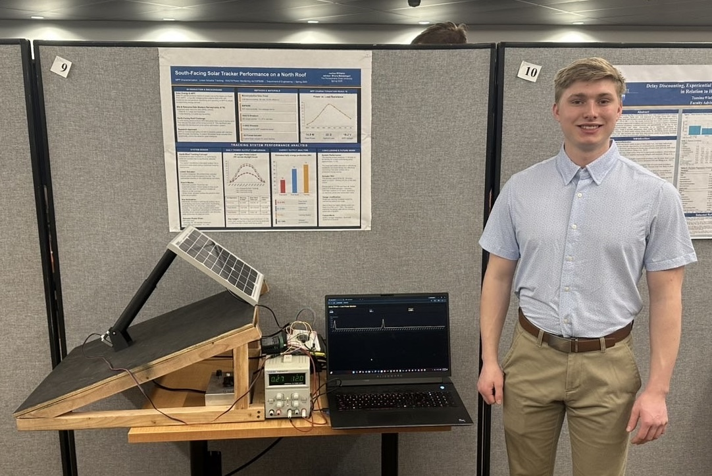

A four-wheel-drive autonomous ground vehicle designed from the ground up in Fusion 360, including the chassis, independent suspension, and steering knuckles, with TPU-printed wheels. The rover is currently in hardware testing. The electronics stack pairs a Raspberry Pi 4 with an ESP32, driving encoder-based motors through H-bridge drivers off a 3S LiPo power system, with a 500ms motor-cutoff safety watchdog to protect the hardware during testing.
Hardware Lead on the project, responsible for the mechanical design (chassis, suspension, steering) and the power/motor control electronics, including the safety watchdog system. Also building the data logging system that tracks encoder speed, motor response, and power usage during tests, while a partner develops the Python/OpenCV navigation stack. The project is documented with full CAD and a bill of materials on GitHub.

Photo placeholder — swap in a real rover build photo when ready.